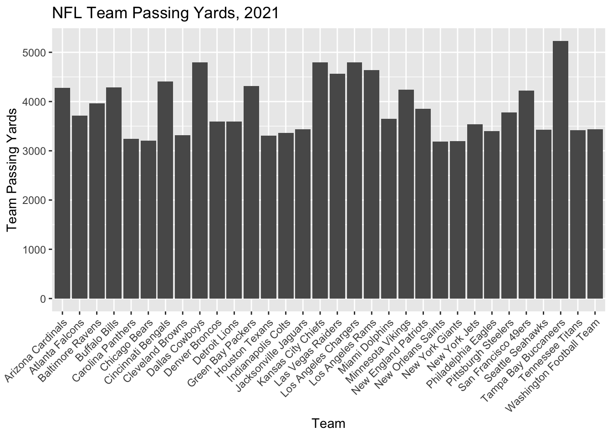
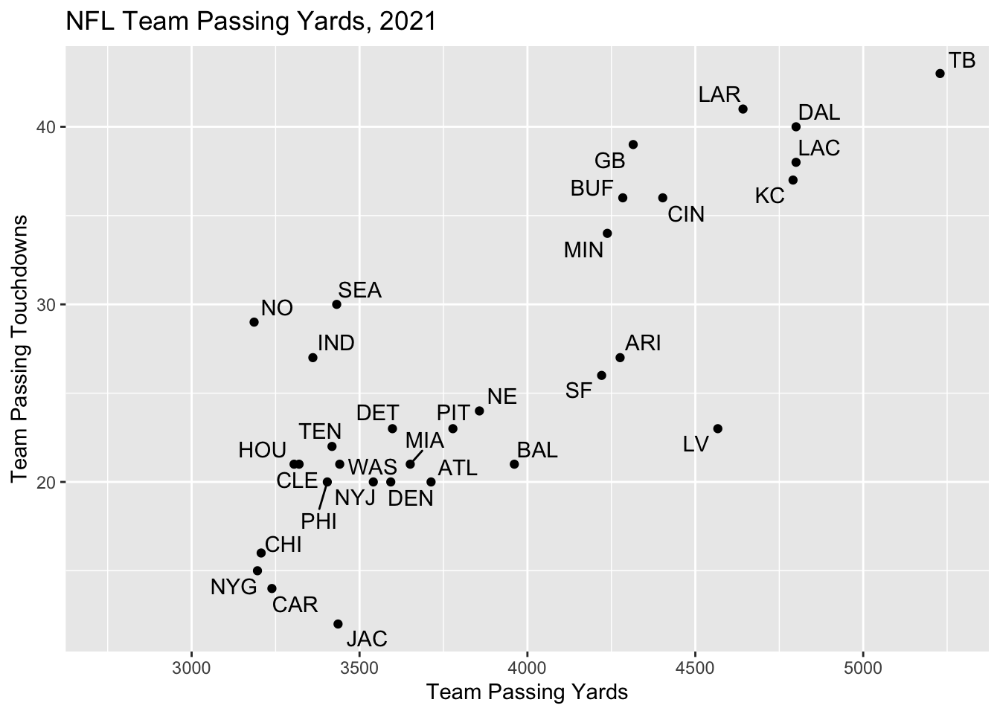
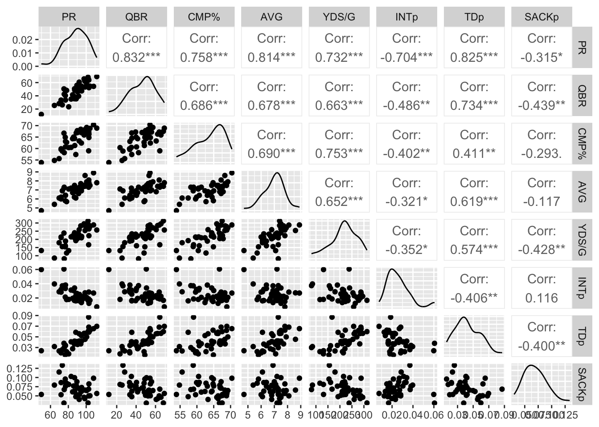

Sports Analytics
2022-07-21
About
This book serves as the course textbook for the following courses at Colorado State University:
STAT 351 (Sports Statistics and Analytics 1)
STAT 451 (Sports Statistics and Analytics 2
CSU students contributed to the creation of this book. Many thanks to the following student collaborators:
Levi Kipp
Ellie Martinez
Isaac Moorman
0.1 Getting Started With R
0.1.1 Installing R
For this class, you will be using R Studio to complete statistical analyses on your computer.
To begin using R Studio, you will need to install “R” first and then install “R Studio” on your computer.
Step 1: Download R
(a) Visit https://www.r-project.org/
(b) Click CRAN under Download
(c) Select any of the mirrors
(d) Click the appropriate link for your type of system (Mac, Windows, Linux)
(e) Download R on this next page.
(For Windows, this will say install R for the first time. For Mac, this will be under Latest release and will be something like R-4.1.0.pkg – the numbers may differ depending on the most recent version)
(f) Install R on your computer
Step 2: Download R Studio
(a) Visit https://www.rstudio.com/products/rstudio/download/#download
(b) Click to download
(c) Install R Studio on your computer
Step 3: Verify R Studio is working
(a) Open R Studio
(b) Let’s enter a small dataset and calculate the average to make sure everything is working correctly.
(c) In the console, type in the following dataset of Sammy Sosa’s season home run totals from 1998–2002:
sosa.HR <- c(66,63,50,64,49)- In the console, calculate the average season home run total for Sammy Sosa between 1998–2002:
mean(sosa.HR)## [1] 58.4(e) Did you find Slammin’ Sammy’s average home run total from 1998–2002 was 58.4? If so, you should be set up correctly!
0.1.2 Some R Basics
For the following examples, let’s consider Peyton Manning’s career with the Denver Broncos. In his four seasons with the Broncos, Manning’s passing yard totals were: 4659, 5477, 4727, 2249. Let’s enter this data into R. To enter a vector of data, use the c() function.
peyton <- c(4659, 5477, 4727, 2249)To look at the data you just put in the variable peyton, type peyton into the console and press enter.
peyton## [1] 4659 5477 4727 2249Some basic function for calculating summary statistics include summary, mean(), median(), var(), and sd().
summary(peyton)## Min. 1st Qu. Median Mean 3rd Qu. Max.
## 2249 4056 4693 4278 4914 5477mean(peyton)## [1] 4278sd(peyton)## [1] 1402.522R allows you to install additional packages (collections of functions) that aren’t offered in the base version of R. To install a package, use install.packages(
One package that we will use frequently is tidyverse. This package includes several other packages and functions such as ggplot (plotting function), dplyr (data manipulation package), and stringr (string manipulation package).
install.packages("tidyverse")
library("tidyverse")You will also need to know how to load datasets from files. For this class, we will typically provide data files is .csv format.
Here is how to load a file:
# load readr package and load example dataset
library(readr)
NFL_2021_Team_Passing <- read_csv("data/NFL_2021_Team_Passing.csv")
# we can look at the header (first few entries) using "head()"
head(NFL_2021_Team_Passing)## # A tibble: 6 × 25
## Rk Tm G Cmp Att `Cmp%` Yds TD `TD%` Int `Int%` Lng
## <dbl> <chr> <dbl> <dbl> <dbl> <dbl> <dbl> <dbl> <dbl> <dbl> <dbl> <dbl>
## 1 1 Tampa Bay… 17 492 731 67.3 5229 43 5.9 12 1.6 62
## 2 2 Los Angel… 17 443 674 65.7 4800 38 5.6 15 2.2 72
## 3 3 Dallas Co… 17 444 647 68.6 4800 40 6.2 11 1.7 73
## 4 4 Kansas Ci… 17 448 675 66.4 4791 37 5.5 13 1.9 75
## 5 5 Los Angel… 17 406 607 66.9 4642 41 6.8 18 3 79
## 6 6 Las Vegas… 17 429 628 68.3 4567 23 3.7 14 2.2 61
## # … with 13 more variables: `Y/A` <dbl>, `AY/A` <dbl>, `Y/C` <dbl>,
## # `Y/G` <dbl>, Rate <dbl>, Sk <dbl>, SKYds <dbl>, `Sk%` <dbl>, `NY/A` <dbl>,
## # `ANY/A` <dbl>, `4QC` <dbl>, GWD <dbl>, EXP <dbl>0.2 Descriptive Statistics
0.2.1 Definitions
Definition 0.1 A population is a well-defined complete collection of objects.
Definition 0.2 A sample is a subset of the population.
Example 0.1 Suppose we are interested in studying Peyton’s Manning’s season passing yards totals. How could you define the population and what is one possible sample?
Definition 0.3 Quantitative data is numeric data or numbers. It can be broken into two further categories: discrete and continuous data.
Definition 0.4 Discrete data is quantitative data with a finite or countably infinite number of values.
Definition 0.5 Continuous data is quantitative data with an uncountably infinite number of values or data taken from an interval.
Example 0.2 What are possible discrete and continuous data associated with Peyton Manning?
Definition 0.6 Qualitative data refers to names, categories, or descriptions. It can also be broken down into two further categories, nominal data and ordinal data.
Definition 0.7 Nominal data is qualitative data with no natural ordering.
Definition 0.8 Ordinal data is qualitative data with a natural ordering.
Example 0.3 What are possible nominal and ordinal data associated with Peyton Manning?
0.2.2 Descriptive Statistics
While we will learn about some descriptive statistics that are unique to specific sports, there are some descriptive statistics that are frequently used in many applications.
0.2.2.1 Quantitative Data
There are different descriptive statistics depending on the type of data you are analyzing. We will begin by looking at descriptive statistics for quantitative data.
To begin, let \(x_1, x_2, \ldots, x_n\) represent a numerical dataset with a sample of size \(n\), where \(x_i\) is the \(i^\text{th}\) value in the dataset.
Definition 0.9 The sum of the data values is given by: \(\sum_{i=1}^n x_i = x_1 + x_2 + \ldots + x_n\)
Definition 0.10 The sample mean (or sample average), \(\bar{x}\), of the numerical dataset is given by \(\bar{x} = \frac{1}{n} \sum_{i=1}^n x_i\)
Definition 0.11 The population mean (or population average), \(\mu\), is the mean value for the entire population.
The mean can be thought of as a measure of center or more generally, a measure of location.
Example 0.4 Recall that Peyton Manning’s season passing yards total while with the Broncos were: 4659, 5477, 4727, 2249. Calculate the sample mean of these values.
# Calculate the sample of Peyton Manning's passing yards season totals with Colts
peyton.broncos <- c(4659, 5477, 4727, 2249)
mean(peyton.broncos)## [1] 4278In sports statistics, we often have to choose between using a descriptive statistic that summarizes a quantity versus a descriptive statistic that summarizes a rate. For instance, in basketball, we can compare two players based on how many points they score in a game (total quantity) or we can compare two players based on how many points per minute played (rate statistic). Many applications in sports analytics focus more on rate statistics rather than quantity statistics. Why?
We can measure the spread or variability of a dataset using variance and standard devatiation.
Definition 0.12 The sample variance, \(s^2\), of the numerical dataset is a measure of spread and is given by \(s^2 = \frac{1}{n-1}\sum_{i=1}^n (x_i - \bar{x})^2\)
Definition 0.13 The sample standard deviation, \(s\), of the numerical dataset is a measure of spread and is given by \(s = \sqrt{s^2} = \sqrt{\frac{1}{n-1}\sum_{i=1}^n (x_i - \bar{x})^2}\)
Definition 0.14 The population variance, \(\sigma^2\), is the variance for an entire population and is given by \(\sigma^2 = \frac{1}{N} \sum_{i=1}^N (x_i - \mu)^2\), where \(N\) is the population size.
Definition 0.15 The population standard deviation, \(\sigma\), is the standard deviation for an entire population and is given by \(\sigma = \sqrt{\frac{1}{N} \sum_{i=1}^N (x_i - \mu)^2}\)
We often prefer to work with standard deviations as a measure of spread as opposed to variance because standard deviations are given in our original units.
# Calculate the variance and standard deviation of Peyton Manning's passing yards
# season totals with Broncos
var(peyton.broncos) # units: yards^2## [1] 1967068sd(peyton.broncos) # units: yards## [1] 1402.522Definition 0.16 The sample median, \(\tilde{x}\), of a numerical dataset is the middle value when the data are ordered from smallest to largest. In other words, let \(x_1, x_2, \ldots, x_n\) be the (unordered) dataset and let \(x_{(1)},x_{(2)}, \ldots, x_{(n)}\) be the same dataset but ordered from smallest to largest. If \(n\) is odd, then \(\tilde{x} = x_{(n+1)/2}\) and if \(n\) is even, then \(\tilde{x} = \frac{1}{2} \cdot \left[x_{\left(\frac{n}{2}\right)} + x_{\left(\frac{n+1}{2}\right)}\right]\).
Example 0.5 Calculate the sample median of Peyton Manning’s season passing yards total while with the Colts (3739, 4135, 4413, 4131, 4200, 4267, 4557, 3747, 4397, 4040, 4002, 4500, 4700).
Like sample mean, sample median is a measure of center. It gives you an idea of where the ``middle” of your dataset is.
We can calculate sample mean and sample median in R as follows:
# Calculate the median of Peyton Manning's passing yards season totals with
# Broncos and Colts
peyton.colts <- c(3739, 4135, 4413, 4131, 4200, 4267, 4557, 3747, 4397, 4040,
4002, 4500, 4700)
median(peyton.broncos)## [1] 4693median(peyton.colts)## [1] 4200Definition 0.17 A percentile is a measure of relative standing. The \(p^\text{th}\) percentile is the number where at least p% of the data values are less than or equal to this number.
Definition 0.18 A quantile is a measure of relative standing and are the cut points for breaking a distribution of values into equal sized bins.
Definition 0.19 A quartile is a measure of relative standing and are the cut points for breaking a distribution of values into four equal parts.
# Calculate the 10th and 90th percentile of Peyton Manning's passing yards season
# totals with Colts
quantile(peyton.colts,0.10)## 10%
## 3798quantile(peyton.colts,0.90)## 90%
## 4545.6quantile(peyton.colts,c(0.1,0.9))## 10% 90%
## 3798.0 4545.6Special percentiles:
1. 25th percentile = 1st quartile = \(Q_1\)
2. 50th percentile = 2nd quartile = \(Q_2\) = \(\tilde{x}\)
3. 75th percentile = 3rd quartile = \(Q_3\)
Definition 0.20 Range is a measure of spread, measures the full width of a dataset, and is given by: \(Range = Max - Min\).
Definition 0.21 Interquartile range is a measure of spread, measures the width of the middle 50% of a dataset, and is given by: \(IQR = Q_3 - Q_1\).
Definition 0.22 A five number summary describes the center, spread, and edges of a dataset and is given by: \((Min,Q_1,Q_2,Q_3,max)\).
summary(peyton.colts)## Min. 1st Qu. Median Mean 3rd Qu. Max.
## 3739 4040 4200 4218 4413 4700quantile(peyton.colts,c(0,0.25,0.5,0.75,1))## 0% 25% 50% 75% 100%
## 3739 4040 4200 4413 47000.2.2.2 Qualitative Data
In sports statistics, we also encounter qualitative (categorical) data which is names or labels which has its own descriptive statistics.
To begin, let \(x_1, x_2, \ldots, x_n\) represent a categorical dataset with a sample of size \(n\), where \(x_i\) is the \(i^\text{th}\) value in the dataset.
Definition 0.23 The proportion of sampled data that fall into a category is given by: \(p = \frac{\#\text{ in category}}{\#\text{ total}}\)
’’Proportion” and “Probability” are often used interchangeably. Both have a minimum value of 0 and a maximum value of 1.
Definition 0.24 The percentage of sampled data that fall into a category is given by: \(P\% = 100 \cdot p = 100 \cdot \frac{\#\text{ in category}}{\#\text{ total}}\)
Percentages in this context can have a minimum value of 0% and a maximum value of 100%.
Example 0.6 In 2014, Peyton Manning started as quarterback for the Denver Broncos. The result of the Broncos’ 16-game season was:
Win, Win, Loss, Win, Win, Win, Win, Loss, Win, Loss, Win, Win, Win, Win, Loss, Win
Calculate the proportion and percentage of Broncos’ winning games in 2014.
broncos2014 <- c("Win", "Win", "Loss", "Win", "Win", "Win", "Win", "Loss", "Win",
"Loss", "Win", "Win", "Win", "Win", "Loss", "Win")
broncos.prop <- sum(broncos2014 == "Win")/length(broncos2014); broncos.prop## [1] 0.75broncos.perc <- 100*broncos.prop; broncos.perc## [1] 75We can also build a frequency table that summarizes the categories and their occurrences using table() in R. Note that table() works for quantitative and qualitative data.
table(broncos2014)## broncos2014
## Loss Win
## 4 120.3 Visualizations
Conveying information visually is also an important part in providing a description of a dataset.
R provides some basic plotting functions such as plot, hist, and barplot. These plotting functions are simple and not always very clean looking.
In this class, we will use analogous plotting functions in ggplot2 that are much improved plotting functions.
If you have already installed the tidyverse package, it should have also installed the ggplot2 package.
# install.packages("tidyverse")
# Load the tidyverse package (which includes ggplot2)
library(tidyverse)Let’s load the file ``NFL_2021_Team_Passing.csv” which contains NFL Team Passing Statistics, 2021 from https://www.pro-football-reference.com/years/2021/index.htm#passing
library(readr)
NFL_2021_Team_Passing <- read_csv("data/NFL_2021_Team_Passing.csv")
head(NFL_2021_Team_Passing)## # A tibble: 6 × 25
## Rk Tm G Cmp Att `Cmp%` Yds TD `TD%` Int `Int%` Lng
## <dbl> <chr> <dbl> <dbl> <dbl> <dbl> <dbl> <dbl> <dbl> <dbl> <dbl> <dbl>
## 1 1 Tampa Bay… 17 492 731 67.3 5229 43 5.9 12 1.6 62
## 2 2 Los Angel… 17 443 674 65.7 4800 38 5.6 15 2.2 72
## 3 3 Dallas Co… 17 444 647 68.6 4800 40 6.2 11 1.7 73
## 4 4 Kansas Ci… 17 448 675 66.4 4791 37 5.5 13 1.9 75
## 5 5 Los Angel… 17 406 607 66.9 4642 41 6.8 18 3 79
## 6 6 Las Vegas… 17 429 628 68.3 4567 23 3.7 14 2.2 61
## # … with 13 more variables: `Y/A` <dbl>, `AY/A` <dbl>, `Y/C` <dbl>,
## # `Y/G` <dbl>, Rate <dbl>, Sk <dbl>, SKYds <dbl>, `Sk%` <dbl>, `NY/A` <dbl>,
## # `ANY/A` <dbl>, `4QC` <dbl>, GWD <dbl>, EXP <dbl>0.3.1 Histograms
Histograms are one of the most common and basic ways to visualize a dataset’s distribution of values. To make a histogram, you will use ggplot and geom_histogram.
Example 0.7 Create a histogram of the NFL Team Passing Yards in 2021.
NFL_2021_Team_Passing %>% ggplot(aes(x=Yds)) + geom_histogram()
Notice how %>% is used to pipe the dataset into ggplot. This is using the pipe function from the dplyr package.
By default, geom_histogram uses 30 bins but this is customizable. Let’s make the bins have a width of 200.
All good visualizations have good labels. Let’s improve the axis labels and give the figure a title.
NFL_2021_Team_Passing %>% ggplot(aes(x=Yds)) +
geom_histogram(binwidth = 200) +
labs(x="Team Passing Yards",y="Team Passing Touchdowns",title="NFL Team Passing Yards, 2021")We also have numerous options to change the appearance of plots when using ggplot. Let’s change the bins color to blue and change the bin borders to white.
NFL_2021_Team_Passing %>% ggplot(aes(x=Yds)) +
geom_histogram(color = "white", fill = "blue", binwidth = 200) +
labs(x="Team Passing Yards", y="Team Passing Touchdowns", title="NFL Team Passing Yards, 2021")
0.3.2 Bar Plots
We can also create bar plots using ggplot using the geom_bar function.
Example 0.8 Create a bar plot with teams on the horizontal axis and passing touchdowns on the vertical axis.
NFL_2021_Team_Passing %>% ggplot(aes(x=Tm,y=Yds)) +
geom_bar(stat="identity")
The team labels are a complete mess. Let’s fix this and make some adjustments to the axis labels and figure title.
NFL_2021_Team_Passing %>% ggplot(aes(x=Tm,y=Yds)) +
geom_bar(stat="identity") +
labs(x="Team", y="Team Passing Yards",
title="NFL Team Passing Yards, 2021") +
theme(axis.text.x = element_text(angle = 90, vjust = 0.5, hjust=1))
We can flip this graph if we like as well. Note that when we flip the graph, our labels get in reverse ordering, so this can be fixed using fct_rev() which is part of the forcats package.
NFL_2021_Team_Passing %>%
ggplot(aes(x=fct_rev(Tm),y=Yds)) +
geom_bar(stat="identity") +
labs(x="Team Passing Yards",y="Team",title="NFL Team Passing Yards, 2021") +
coord_flip()
We can also order the teams from most team passing touchdowns to least using the forcats package.
NFL_2021_Team_Passing %>% mutate(Tm = fct_reorder(Tm,Yds)) %>%
ggplot(aes(x=Tm,y=Yds)) +
geom_bar(stat="identity") +
labs(x="Team Passing Yards",y="Team Passing Yards",title="NFL Team Passing Yards, 2021") +
coord_flip()
0.3.3 Scatter Plots
Another common and useful visualization is a scatterplot which shows the relationship between two numeric variable. In ggplot, you use geom_point().
Example 0.9 Create a scatterplot of Team Passing Yards and Team Passing Touchdowns from the NFL 2021 dataset.
NFL_2021_Team_Passing %>%
ggplot(aes(x=Yds,y=TD,label=Tm)) +
geom_point() +
labs(x="Team Passing Yards",y="Team Passing Touchdowns",title="NFL Team Passing Yards, 2021")
We may want to include team labels on this plot, however, it can get messy very quickly with a lot of points.
NFL_2021_Team_Passing %>%
ggplot(aes(x=Yds,y=TD,label=Tm)) +
geom_point() +
labs(x="Team Passing Yards",y="Team Passing Touchdowns",title="NFL Team Passing Yards, 2021") +
geom_text()
Many sports leagues have around 30 teams, so a clean scatterplot with labels can be tricky to make. Here are some options below.
# install ggrepel package
library(ggrepel)
NFL_2021_Team_Passing %>%
ggplot(aes(x=Yds,y=TD,label=Tm)) +
geom_point() +
labs(x="Team Passing Yards",y="Team Passing Touchdowns",title="NFL Team Passing Yards, 2021") +
geom_text_repel()## Warning: ggrepel: 6 unlabeled data points (too many overlaps). Consider
## increasing max.overlapsNFL_2021_Team_Passing$Abbr <- c("TB","LAC","DAL","KC","LAR","LV","CIN","GB","BUF","AZ","MN","SF",
"BAL","NE","PIT","ATL","MIA","DET","DEN","NYJ","WAS","JAC","SEA",
"TEN","PHI","IND","CLE","HOU","CAR","CHI","NYG","NO")
NFL_2021_Team_Passing %>%
ggplot(aes(x=Yds,y=TD,label=Abbr)) +
geom_point() +
scale_x_continuous(limits=c(2750,5250)) +
labs(x="Team Passing Yards",y="Team Passing Touchdowns",title="NFL Team Passing Yards, 2021") +
geom_text_repel(box.padding = 0.3) 
0.3.4 Kable Tables
We can build nice tables using kableR and kableExtra. Let’s look at a few options.
# Use a smaller dataset as an example
NFL21 <- NFL_2021_Team_Passing %>% select(2:8) %>% slice_head(n = 5)
# Default output for tabular data
NFL21## # A tibble: 5 × 7
## Tm G Cmp Att `Cmp%` Yds TD
## <chr> <dbl> <dbl> <dbl> <dbl> <dbl> <dbl>
## 1 Tampa Bay Buccaneers 17 492 731 67.3 5229 43
## 2 Los Angeles Chargers 17 443 674 65.7 4800 38
## 3 Dallas Cowboys 17 444 647 68.6 4800 40
## 4 Kansas City Chiefs 17 448 675 66.4 4791 37
## 5 Los Angeles Rams 17 406 607 66.9 4642 41You can find additional details on customizing kable tables at https://cran.r-project.org/web/packages/kableExtra/vignettes/awesome_table_in_pdf.pdf
# Output using Kable (with no additional options)
library(kableExtra)
# Output using Kable and Kable-Styling and some additional options
NFL21 %>% kable() %>% kable_styling(latex_options="hold_position")| Tm | G | Cmp | Att | Cmp% | Yds | TD |
|---|---|---|---|---|---|---|
| Tampa Bay Buccaneers | 17 | 492 | 731 | 67.3 | 5229 | 43 |
| Los Angeles Chargers | 17 | 443 | 674 | 65.7 | 4800 | 38 |
| Dallas Cowboys | 17 | 444 | 647 | 68.6 | 4800 | 40 |
| Kansas City Chiefs | 17 | 448 | 675 | 66.4 | 4791 | 37 |
| Los Angeles Rams | 17 | 406 | 607 | 66.9 | 4642 | 41 |
If you are going to use kable tables frequently in a document, you can write a short function to set your default options. After I ran the function below, the function kt will produce a kable table with my options set.
# kable table global setup
kt <- function(data) {
knitr::kable(data, digits=3, align=c('l','c','c','c','c','c','c','c','c')) %>% kable_styling(bootstrap_options='striped', latex_options='HOLD_position', full_width = F, position = "center")
}NFL21 %>% kt()| Tm | G | Cmp | Att | Cmp% | Yds | TD |
|---|---|---|---|---|---|---|
| Tampa Bay Buccaneers | 17 | 492 | 731 | 67.3 | 5229 | 43 |
| Los Angeles Chargers | 17 | 443 | 674 | 65.7 | 4800 | 38 |
| Dallas Cowboys | 17 | 444 | 647 | 68.6 | 4800 | 40 |
| Kansas City Chiefs | 17 | 448 | 675 | 66.4 | 4791 | 37 |
| Los Angeles Rams | 17 | 406 | 607 | 66.9 | 4642 | 41 |
0.4 Baseball
Baseball rules YouTube video: https://www.youtube.com/watch?v=skOsApsF0jQ&t=63s
0.4.1 Basic Hitting Statistics
Plate Appearances (PA): number of completed batting appearances
At-Bats (AB): Batting appearances, not including bases on balls, hit by pitch, sacrifices, interference, or obstruction
Hits (H): Times reached base because of a batted, fair ball without error by the defense
Singles (1B): Hits on which the batter reached first base safely without the contribution of a fielding error
Doubles (2B): Hits on which the batter reached second base safely without the contribution of a fielding error
Triples (3B): Hits on which the batter reached third base safely without the contribution of a fielding error
Home Runs (HR): Hits on which the batter successfully touched all four bases, without the contribution of a fielding error
Total Bases (TB): One for each single, two for each double, three for each triple, and four for each home run
Hit by Pitch (HBP): Times touched by a pitch and awarded first base as a result
Sacrifice Fly (SF): Number of fly ball outs which allow another runner to advance on the basepaths or score
Base on Balls (BB or Walk): Times receiving four balls and advancing to first base
Intentional Base on Balls (IBB or Intentional Walk): Times receiving four balls intentionally and advancing to first base
Strikeout (K): Number of times that strike three is taken or swung at and missed, or bunted foul
Runs (R): Times reached home base legally and safely
Runs Batted In (RBI): Number of runners who scored due to a batters’s action, except when batter grounded into double play or reached on an error
Batting Average (AVG or BA): Hits divided by at bats
On Base Percentage/Average (OBP or OBA): Times reached base (H + BB + HBP) divided by at bats plus walks plus hit by pitch plus sacrifice flies (AB + BB + HBP + SF)
Slugging Percentage/Average (SLG): Total bases divided by at-bats
On-base Plus Slugging (OPS): On-base percentage plus slugging average
0.4.2 Basic Pitching Statistics
Innings Pitched (IP): Number of outs recorded while pitching divided by three
Strikeout (K): Number of batters who received strike three
Base on Balls (BB or Walk): Times pitching four balls, allowing the batter-runner to advance to first base
Hits Allowed (H): Total hits allowed
Wins (W): Number of games where pitcher was pitching while his team took the lead and went on to win
Losses (L): Number of games where pitcher was pitching while the opposing team took the lead, never lost the lead, and went on to win
Earned Runs (ER): Number of runs that did not occur as a result of errors or passed balls
Earned Run Average (ERA): Earned runs times innings in a game (usually nine) divided by innings pitched
Walks and Hits Per Inning Pitched (WHIP): Walks plus hits allowed divided by innings pitched
0.4.3 Advanced Baseball Hitting Statistics
Isolated Power (ISO): Slugging percentage minus Batting average
On-base Plus Slugging Plus (OPS+): OPS normalized for park effects with 100 being league average
Weighted On-Base Average (wOBA): Hitting rate statistic that attempts to credit the hitter for the value of each outcome. The following formula can be updated each year based on the scoring environment. The following formula was updated for the 2021 season.
\[wOBA = \frac{0.69 \cdot (BB - IBB) + 0.719 \cdot HBP + 0.87 \cdot 1B + 1.217 \cdot 2B + 1.529 \cdot 3B + 1.94 \cdot HR}{AB + BB - IBB + SF + HBP}\]
- Expected Weighted On-Base Average (xwOBA): Hitting rate statistic that attempts to credit the hitter for the value of each expected outcome based on Statcast data.
0.4.4 Advanced Baseball Pitching Statistics
- Fielding Independent Pitching (FIP): Statistic that estimates a pitcher’s run prevention independent of the performance of the defense
\[FIP = \frac{13 \cdot HR + 3 \cdot (BB + HBP) - 2 \cdot K}{IP} + FIP_{constant}\]
The \(FIP_{constant}\) is generally around 3.10 and is put FIP on a scale similar to ERA.
- Expected Fielding Independent Pitching (xFIP): Statistic that estimates a pitcher’s expected run prevention independent of the performance of the defense
\[xFIP = \frac{13 \cdot (Fly Balls \cdot LgHR/FB\%)+3 \cdot (BB + HBP) - 2 \cdot K}{IP} + FIP_{constant}\]
0.4.5 Wins Above Replacement
- Wins Above Replacement (WAR): Estimated number of wins that a player has outperformed a replacement player by with the same playing time. This is one of the most crucial statistics in Sabermetrics.
More about WAR from Fangraphs: https://library.fangraphs.com/misc/war/
References:
https://www.baseball-reference.com/bullpen/Baseball_statistics
https://blogs.fangraphs.com/glossary/
https://library.fangraphs.com/fangraphs-library-glossary/
0.4.6 Calculating Advanced Hitting Statistics
Example 0.10 Using the Colorado Rockies 2021 individual hitting statistics, calculate the AVG, OBA, SLG, OPS, ISO, wOBA.
# load data file and look at the header
rox21 <- read_csv("data/rockies_hitting2021.csv")
rox21 %>% slice_head(n=5) %>% kt()| Name | PA | AB | R | H | 2B | 3B | HR | RBI | BB | IBB | SO | HBP | SF | oWAR |
|---|---|---|---|---|---|---|---|---|---|---|---|---|---|---|
| Elias Diaz | 371 | 338 | 52 | 83 | 18 | 1 | 18 | 44 | 30 | 1 | 60 | 2 | 1 | 1.1 |
| C.J. Cron | 547 | 470 | 70 | 132 | 31 | 1 | 28 | 92 | 60 | 3 | 117 | 13 | 4 | 3.1 |
| Brendan Rodgers | 415 | 387 | 49 | 110 | 21 | 3 | 15 | 51 | 19 | 0 | 84 | 7 | 2 | 1.9 |
| Trevor Story | 595 | 526 | 88 | 132 | 34 | 5 | 24 | 75 | 53 | 2 | 139 | 11 | 5 | 3.4 |
| Ryan McMahon* | 596 | 528 | 80 | 134 | 32 | 1 | 23 | 86 | 59 | 2 | 147 | 4 | 5 | 1.7 |
# Create new variables using the mutate function
rox21 <- rox21 %>%
mutate(AVG = H/AB,3) %>%
mutate(OBA = (H + BB + HBP)/(AB + BB + HBP + SF)) %>%
mutate(SLG = ((H-`2B`-`3B`-HR) + 2*`2B` + 3*`3B` + 4*HR)/AB) %>%
mutate(OPS = SLG + OBA) %>%
mutate(wOBA = (0.692 * (BB - IBB) + 0.722 * HBP + 0.879 * (H-`2B`-`3B`-HR) + 1.242 * `2B` + 1.568 * `3B` + 2.007 * HR)/(AB + BB - IBB + SF + HBP)) %>%
mutate(ISO = SLG-AVG)
rox21 %>% slice_head(n=5) %>% select(Name,PA,AVG,OBA,SLG,OPS,wOBA,ISO) %>% kt()| Name | PA | AVG | OBA | SLG | OPS | wOBA | ISO |
|---|---|---|---|---|---|---|---|
| Elias Diaz | 371 | 0.246 | 0.310 | 0.464 | 0.774 | 0.330 | 0.219 |
| C.J. Cron | 547 | 0.281 | 0.375 | 0.530 | 0.905 | 0.383 | 0.249 |
| Brendan Rodgers | 415 | 0.284 | 0.328 | 0.470 | 0.798 | 0.341 | 0.186 |
| Trevor Story | 595 | 0.251 | 0.329 | 0.471 | 0.801 | 0.341 | 0.221 |
| Ryan McMahon* | 596 | 0.254 | 0.331 | 0.449 | 0.779 | 0.334 | 0.195 |
Example 0.11 oWAR is Baseball Reference’s offensive WAR statistic. Note that Baseball Reference and Fangraphs use different formulas when calculating WAR though their results are typically similar. For Rockies players with at least 100 at-bats in 2021, what hitting statistics are most and least correlated to oWAR?
# Let's remove players with less than 100 ABs
rox21_100 <- rox21 %>% filter(AB >= 100)
# GGally package has a nice pairs plotting function
library("GGally")
# Standard hitting statistics
rox21_100 %>% select(oWAR,H,`2B`,`3B`,HR,R,RBI) %>% ggpairs() +
theme(axis.text.x = element_text(angle = 90, hjust = 1))
# Rate statistics
rox21_100 %>% select(oWAR,AVG,OBA,SLG,OPS,wOBA) %>% ggpairs()0.4.7 Evaluating Advanced Pitching Statistics
Earned run average (ERA) has been traditionally used to evaluate a pitcher, however, it has some flaws. First of all, it is highly dependent on the fielders playing behind the pitcher. If a pitcher’s shortstop has poor range, he won’t convert as many groundballs into outs as a shortstop with good range. ERA is also a noisy measurement in that can be affected easily by random luck.
To overcome some of the downsides of ERA, FIP and xFIP were developed to help reduce the variance (noise) of the measurement and to remove factors, like defense, that are not a function of the pitcher’s ability.
Let’s look at the twenty starting pitchers that had the most innings pitched in MLB for the total of the 2020 and 2021 seasons. We want to examine the year-to-year correlation between ERA, FIP, and xFIP.
pitchers2021 <- read_csv("data/MLBpitchers20-21.csv")
pitchers2021 %>% slice_head(n=5) %>% kt()| Player | ERA20 | FIP20 | xFIP20 | ERA21 | FIP21 | xFIP21 |
|---|---|---|---|---|---|---|
| Zack Wheeler | 2.92 | 3.22 | 3.76 | 2.78 | 2.59 | 2.84 |
| Adam Wainwright | 3.15 | 4.11 | 4.23 | 3.05 | 3.66 | 3.87 |
| Kyle Hendricks | 2.88 | 3.55 | 3.78 | 0.77 | 4.89 | 4.61 |
| German Marquez | 3.75 | 3.28 | 3.83 | 4.40 | 3.86 | 3.64 |
| Luis Castillo | 3.21 | 2.65 | 2.82 | 3.98 | 3.75 | 3.63 |
Let’s look at the correlations between these variables, paying close attention to what variables are most correlated with ERA20, a pitcher’s ERA in 2020.
pitchers2021 %>% select(-Player) %>% ggpairs(title="Correlation plot of pitching statistics, MLB 2020-2021")
This is a small dataset that only contains twenty pitchers (samples), but you will notice that ERA20 is more highly correlated with FIP21 and xFIP21 than ERA21. In other words, FIP and xFIP are likely better predictors of ERA success in the future rather than ERA success in the past.
0.5 Football
Link to YouTube video describing football rules
0.5.1 Basic Football Statistics
Yards (Yd): Number of yards gained from the line of scrimmage (can be broken down into Offense: Rushing and Passing Yards, Defense: Rushing and Passing Yards Allowed, and Special Teams: Kick and Punt Return Yards)
Touchdowns (TD): Number of times the offense carries or passes the ball successfully into the end zone of the opposing side (can be broken down into: Offensive TDs: Rushing and Passing TDs, Defensive TDs: interception or fumble recovery for a touchdown, and Special Teams TDs: kick or punt return touchdowns)
Sacks (Sk): Number of times a player or a team tackles the quarterback behind the line of scrimmage before he can throw a pass
Interceptions (INT): Number of times a player or a team catches an opponent’s pass
0.5.2 Advanced Football Statistics
- Passer Rating (or Passing Efficiency): Measure of performance of a quarterback
For NFL, the formula is as follows:
\[Passer Rating_{NFL} = \left(\frac{a+b+c+d}{6}\right) \cdot 100\]
where: \[a = \left(\frac{COMP}{ATT}-0.3\right) \cdot 5\] \[b = \left(\frac{YDS}{ATT} - 3\right) \cdot 0.25\] \[c = \left(\frac{TD}{ATT}\right) \cdot 20\] \[d = 2.375 - \left(\frac{INT}{ATT} \cdot 25\right)\]
ATT = Number of passing attempts, COMP = Number of completions, YDS = Passing yards, TD = Touchdown passes, INT = Interceptions
Note: If the result of any calculation is greater than 2.375, it is set to 2.375. If the result is a negative number, it is set to zero.
For College Football, the formula is as follows:
\[Passer Rating_{NCAAF} = \frac{(8.4 \cdot YDS) + (330 \cdot TD) + (100 \cdot COMP) - (200 \cdot INT)}{ATT}\]
Total Quarterback Rating (QBR): Proprietary measure of performance of a quarterback developed by ESPN in 2011. This is a more comprehensive measurement of quarterback performance that accounts for the quarterback’s impact on his team’s passes, rushes, turnovers, and penalties in terms of expected points added.
Expected Points Added (EPA): Measure of how many points a player or a play is worth to a team.
References:
https://www.pro-football-reference.com/about/glossary.htm
https://en.wikipedia.org/wiki/Passer_rating
Example 0.12 Individual NFL quarterback passing statistics for the 2021 season are provided in NFL_Ind_Passing_2021.csv. Note that this dataset only includes quarterbacks with at least 100 passing yards in 2021. Passer efficiency is given in the RTG column.
# Data: https://www.espn.com/nfl/stats/player
QB_21 <- read_csv("data/NFL_Ind_Passing_2021.csv")
QB_21 %>% select(1,3:8,11:12,15:16) %>% slice_head(n=10) %>% kt()| Name | GP | CMP | ATT | CMP% | YDS | AVG | TD | INT | QBR | RTG |
|---|---|---|---|---|---|---|---|---|---|---|
| Tom Brady | 17 | 485 | 719 | 67.5 | 5316 | 7.4 | 43 | 12 | 68.1 | 102.1 |
| Justin Herbert | 17 | 443 | 672 | 65.9 | 5014 | 7.5 | 38 | 15 | 65.6 | 97.7 |
| Patrick Mahomes | 17 | 436 | 658 | 66.3 | 4839 | 7.4 | 37 | 13 | 62.2 | 98.5 |
| Josh Allen | 17 | 409 | 646 | 63.3 | 4407 | 6.8 | 36 | 15 | 60.7 | 92.2 |
| Derek Carr | 17 | 428 | 626 | 68.4 | 4804 | 7.7 | 23 | 14 | 52.4 | 94.0 |
| Ben Roethlisberger | 16 | 390 | 605 | 64.5 | 3740 | 6.2 | 22 | 10 | 35.6 | 86.8 |
| Trevor Lawrence | 17 | 359 | 602 | 59.6 | 3641 | 6.0 | 12 | 17 | 33.5 | 71.9 |
| Matthew Stafford | 17 | 404 | 601 | 67.2 | 4886 | 8.1 | 41 | 17 | 63.8 | 102.9 |
| Dak Prescott | 16 | 410 | 596 | 68.8 | 4449 | 7.5 | 37 | 10 | 54.6 | 104.2 |
| Kirk Cousins | 16 | 372 | 561 | 66.3 | 4221 | 7.5 | 33 | 7 | 52.3 | 103.1 |
names(QB_21)## [1] "Name" "Team" "GP" "CMP" "ATT" "CMP%" "YDS" "AVG" "YDS/G"
## [10] "LNG" "TD" "INT" "SACK" "SYL" "QBR" "RTG"- Confirm this is passer rating by creating a new variable to calculate passer rating using the provided statistics.
# Create intermediate variables
QB_21 <- QB_21 %>%
mutate(a = (CMP/ATT-0.3)*5) %>%
mutate(b = (YDS/ATT-3)*0.25) %>%
mutate(c = (TD/ATT)*20) %>%
mutate(d = 2.375 -(INT/ATT*25))
# Check to see if a,b,c,d are less than 0 or greater than 2.375
QB_21 %>% summarize(min(a),max(a),min(b),max(b),min(c),max(c),min(d),max(d))## # A tibble: 1 × 8
## `min(a)` `max(a)` `min(b)` `max(b)` `min(c)` `max(c)` `min(d)` `max(d)`
## <dbl> <dbl> <dbl> <dbl> <dbl> <dbl> <dbl> <dbl>
## 1 1.19 2.02 0.433 1.47 0.319 1.74 0.860 2.19QB_21 <- QB_21 %>%
mutate(PR = (a+b+c+d)/6*100)
QB_21 %>% select(Name,RTG,PR) %>% slice_head(n=5) %>% kt()| Name | RTG | PR |
|---|---|---|
| Tom Brady | 102.1 | 102.083 |
| Justin Herbert | 97.7 | 97.656 |
| Patrick Mahomes | 98.5 | 98.455 |
| Josh Allen | 92.2 | 92.170 |
| Derek Carr | 94.0 | 93.963 |
- What counting statistics are most correlated with passer rating and with QBR?
# Grab the counting statistics and create a correlation plot with PR and QBR
QB_21 %>% select(PR,QBR,CMP,ATT,YDS,TD,INT,SACK,SYL) %>% ggpairs()- What rate statistics are most correlated with passer efficiency and with QBR? Use CMP% (completion percentage, completions per attempt), AVG (average yards per attempt), YDS/G (yards per game), and create new variables for interceptions per attempt, touchdowns per attempt, and sacks per attempt.
# Grab the counting statistics and create a correlation plot with PR and QBR
QB_21 <- QB_21 %>%
mutate(INTp = INT/ATT) %>%
mutate(TDp = TD/ATT) %>%
mutate(SACKp = SACK/ATT)
QB_21 %>% select(PR,QBR,`CMP%`,AVG,`YDS/G`,INTp,TDp,SACKp) %>% ggpairs()
0.6 Basketball
Link to YouTube video describing basketball rules
0.6.1 Basic Basketball Statistics
Field Goal (FG): A made shot from either 2- or 3-point range. Free throws, worth 1 point, are not considered field goals. Field goal statistics often include attempts, makes, and percentage.
Free Throw (FT): After certain fouls, the clock stops and a player shoots an uncontested shot from the foul line. These free throws are worth 1 point each; like with field goals, FT statistics often include attempts, makes, and percentage.
Assists (AST): A player is credited with an assist if they pass the ball to a teammate and the teammate scores a field goal after zero or one dribbles. No more than one assist can be recorded per field goal.
Turnover (TO): A player or team can be charged with a turnover for an action or violation that ends their offensive possession before being able to attempt a field goal. For a player (especially a guard), TOs can be compared to assists using Assist:Turnover ratio.
Rebound (REB): The first player to gain control of the ball following a missed field goal is credited with a rebound. If the player is on the same team as the field goal shooter, it is an offensive rebound; otherwise, a defensive rebound.
Points per Possession (PPP): Divides a team’s points by number of possessions to account for a team’s pace.
0.6.2 Advanced Basketball Statistics
True Shooting Percentage (TS%): Unlike traditional shooting percentage, this statistic considers both field goals and free throws. It also gives more weight to shots that are worth more points.
Win Shares: Win shares give each player points for actions that contribute to a team’s success. Win shares take into account a variety of offensive and defensive statistics, but can be calculated using different methods on different platforms.
Value Over Replacement Player (VORP): This is basketball’s response to baseball’s WAR. VORP is a rate statistic that estimates a player’s offensive output as compared to an “average” player.
Player Efficiency Rating (PER): According to its creator John Hollinger, “The PER sums up all a player’s positive accomplishments, subtracts the negative accomplishments, and returns a per-minute rating of a player’s performance.” This statistic rewards great offensive performance more than great defensive plays.
References:
https://www.basketball-reference.com/about/per.html
https://www.basketball-reference.com/about/ws.html
https://www.basketball-reference.com/about/glossary.html
0.6.3 Four Factors
Tibbles are a type of data frame supported by the tidyverse package. The following tibble contains data from a Mountain West tournament game played between the CSU and Wyoming women’s basketball teams during the 2021-2022 season, which CSU won 51-38. (Here’s the link to the box score on the CSU athletics website.)
basketball_data <- tibble(team = c("CSU","WYO"), FG = c(14,15), FGA = c(48,60), THREEP = c(5,4), FT = c(10,4), FTA = c(14,4), ORB = c(2,14), DRB = c(31,30), TOV = c(5,12))
basketball_data %>% kt()| team | FG | FGA | THREEP | FT | FTA | ORB | DRB | TOV |
|---|---|---|---|---|---|---|---|---|
| CSU | 14 | 48 | 5 | 10 | 14 | 2 | 31 | 5 |
| WYO | 15 | 60 | 4 | 4 | 4 | 14 | 30 | 12 |
This tibble contains all the data needed to calculate the Four Factors. The Four Factors of a basketball game are statistics formulated by Dean Oliver, former Director of Quantitative Analysis for the Denver Nuggets (among other roles). These statistics are also promoted by sports data platforms like Hudl.com.
The Four Factors each have offensive and defensive versions; for this example, we’ll focus on the offensive perspective.
The first is Effective Field Goal Percentage, commonly abbreviated eFG%. The formula is as follows:
\(eFG\% = \frac{FG\ +\ 0.5(3P)}{FGA}\)
Secondly, Turnover Percentage (TOV%) is calculated as:
\(TOV\% = \frac{TOV}{FGA\ +\ 0.44(FTA)\ +\ TOV}\)
Next, Rebounding Percentage (ORB%) is computed as:
\(ORB\% = \frac{ORB}{ORB\ +\ Opponent\ DRB}\)
Finally, the Free Throw Factor is found using:
\(FT\ factor = \frac{FT}{FGA}\)
Note: You do not have to know these formulas for the test. They are just used for this example.
Let’s calculate the values of eFG%, TOV%, ORB%, and Free Throw Factor for both CSU and Wyoming and add them as new columns in the tibble using the add_column function.
attach(basketball_data)
eFG <- round((FG + .5 * THREEP)/FGA, 3) * 100
TOVPCT <- round(TOV / (FGA + .44 * FTA + TOV), 3) * 100
ORBPCT <- round(c(ORB[1]/(ORB[1]+DRB[2]), ORB[2]/(ORB[2]+DRB[1])), 3) * 100
FTFACTOR <- round(FT/FGA, 3) * 100
basketball_data %>% add_column(eFG, TOVPCT, ORBPCT, FTFACTOR) %>% kt()| team | FG | FGA | THREEP | FT | FTA | ORB | DRB | TOV | eFG | TOVPCT | ORBPCT | FTFACTOR |
|---|---|---|---|---|---|---|---|---|---|---|---|---|
| CSU | 14 | 48 | 5 | 10 | 14 | 2 | 31 | 5 | 34.4 | 8.5 | 6.2 | 20.8 |
| WYO | 15 | 60 | 4 | 4 | 4 | 14 | 30 | 12 | 28.3 | 16.3 | 31.1 | 6.7 |
While this method does produce Four Factors data, it could be difficult to scale for calculating the same statistics for a sample of several games. In the next section, we will introduce an R package that aids in the calculation of Four Factors.
0.6.3.1 BasketballAnalyzeR Four Factors
The authors of “Basketball Data Science With Applications in R” developed the BasketballAnalyzeR package to be used in conjunction with the book. BasketballAnalyzeR includes built-in datasets from the 2017-18 NBA season and provides many functions for analyzing and plotting basketball data. One such function is fourfactors, which offers a simpler way to perform a four factors analysis.
library("BasketballAnalyzeR")
teams <- c("DEN", "CLE", "GSW") #Nuggets, Cavaliers, Warriors
team_data <- which(Tadd$team %in% teams)
four_factors_teams <- fourfactors(Tbox[team_data, ], Obox[team_data, ])
four_factors_teams %>% select(1,8:15) %>% kt()| Team | F1.Off | F2.Off | F3.Off | F4.Off | F1.Def | F2.Def | F3.Def | F4.Def |
|---|---|---|---|---|---|---|---|---|
| Cleveland Cavaliers | 54.70 | 13.70 | 20.06 | 21.41 | 53.98 | 13.43 | 77.27 | 16.58 |
| Denver Nuggets | 53.62 | 14.90 | 25.66 | 19.77 | 53.88 | 13.83 | 77.45 | 17.35 |
| Golden State Warriors | 56.91 | 15.26 | 21.05 | 19.48 | 50.44 | 13.89 | 76.31 | 18.55 |
This is a much simpler and neater way to calculate Four Factors.
In the 2017-18 season, the Warriors and Cavaliers met in the NBA Finals, while the Nuggets just missed the playoffs. It would be expected that the two Finals teams would have higher values for the Four Factors. While this is mostly true, for which of the Four Factors did the Nuggets have the highest value?
A: Factor 3 (rebounding percentage), both offensive and defensive.
0.6.4 Shot Charts
The BasketballAnalyzeR package includes shot location data for all players for the 2017-18 NBA season and has a function called shotchart that allows for the plotting of shot data.
Let’s plot shot location data for Nikola Jokic. First, the coordinates must be transformed so that the point (0,0) is located at the corner of the court; the original coordinates place the origin at the center of the hoop.
PbP <- PbPmanipulation(PbP.BDB)
jokic_data <- subset(PbP, player == "Nikola Jokic")
jokic_data$xx <- jokic_data$original_x/10 #transformation
jokic_data$yy <- jokic_data$original_y/10 - 41.75 #transformationBasketballAnalyzeR supports three types of density visualizations within shotchart, one being density-polygons. Since shotchart is a ggplot object, a chart title can be added using ggtitle.
shotchart(data = jokic_data, x="xx", y="yy", type="density-polygons") + ggtitle("Nikola Jokic Shot Data, 2017-18")
It seems most shots attempts from Jokic were in the paint; this is hardly surprising, since he plays the center position. Here’s the same chart with density-hexbin:
shotchart(data = jokic_data, x="xx", y="yy", type="density-hexbin") + ggtitle("Nikola Jokic Shot Data, 2017-18")
The same chart with density-raster:
shotchart(data = jokic_data, x="xx", y="yy", type="density-raster") + ggtitle("Nikola Jokic Shot Data, 2017-18")
Within the shotchart function, setting scatter=TRUE overlays the shots on the chart. Point size and transparency can also be customized.
shotchart(data = jokic_data, x="xx", y="yy", type="density-raster", scatter=TRUE) + ggtitle("Nikola Jokic Shot Data, 2017-18")
Let’s now compare shot charts of Nikola Jokic, Steph Curry, and Lebron James. This group of players includes one member of each team for which we calculated Four Factors.
curry_data <- subset(PbP, player == "Stephen Curry")
curry_data$xx <- curry_data$original_x/10 #transformation
curry_data$yy <- curry_data$original_y/10 - 41.75 #transformation
james_data <- subset(PbP, player == "LeBron James")
james_data$xx <- james_data$original_x/10 #transformation
james_data$yy <- james_data$original_y/10 - 41.75 #transformation
shotchart(data = jokic_data, x="xx", y="yy", type="density-raster") + ggtitle("Nikola Jokic Shot Data, 2017-18")
shotchart(data = curry_data, x="xx", y="yy", type="density-raster") + ggtitle("Steph Curry Shot Data, 2017-18")
shotchart(data = james_data, x="xx", y="yy", type="density-raster") + ggtitle("Lebron James Shot Data, 2017-18")
Q: Of the three players (Jokic, Curry, James), which took the highest percentage of their three-point shots from the right side of the court (when facing the basket)?
A: Nikola Jokic shot almost all of his attempts from the right side. Steph Curry took many shots from beyond the arc and tended toward the left side, while James was split between the right side and the center.
Now, let’s focus on Steph Curry’s shooting. The following chart splits the court into zones based on angle and distance from the basket. The color in each zone represents the average length of the play leading up to that shot among shots taken in that zone.
shotchart(data = curry_data, x="xx", y="yy", z="playlength", type="sectors", num.sect = 7, scatter=TRUE, pt.alpha=.3) + ggtitle("Steph Curry Shot Data, 2017-18")
Q: In general, did Steph Curry tend to shoot closer to the basket during plays of a longer duration or a shorter duration?
A: There is not a perfect correlation, but it seems that two-point field goals were attempted more often during longer plays, while shots taken outside the three-point arc were taken during plays of a shorter duration.
References:
https://rdrr.io/cran/BasketballAnalyzeR/
Basketball Data Science (Zuccolotto and Manisera, 2020)
0.7 Hockey
Link to YouTube video describing hockey rules
0.7.1 Basic Hockey Statistics
Here are some basic statistics that are used often to describe hockey games.
Goals (G): If a team scores, the skater on the scoring team who last touched the puck is credited with a goal.
Assists (A): The players (up to two) on the scoring team who last touch the puck before the goalscorer are credited with assists, unless the opposing team has possession of the puck in between.
Points (PTS): Goals plus assists. [Not to be confused with team points awarded in the regular season standings by the many hockey leagues, including the NHL (two points for a win, one point for an overtime/shootout loss, zero points for a regulation loss)].
Shots On Goal (SOG): Shot attempts in which the puck has been shot directly on goal. Shot attempts which are blocked or miss the goal are not considered SOGs. A team’s shots on goal should equal the opposing goaltender’s saves plus the team’s goals scored.
Goals Against Average (GAA): Of a goaltender, the number of goals allowed by that goaltender adjusted to a per-60 minute rate.
Penalty Minutes (PIM): The amount of penalty time an individual player is assigned for their infractions. PIM may be different than the amount of time the player actually spends in the penalty box.
Reference:
https://www.milehighhockey.com/pages/stats
0.7.2 Advanced Hockey Statistics
CORSI: CORSI only applies to 5 on 5 (“even-strength”) situations. It is calculated as the difference between shot attempts on offense (shots on goal + blocked shots + missed shots) minus shot attempts allowed on defense. CORSI can also be expressed as a percentage, with percentages over 50% indicating that the player is on ice for more offensive shots than defensive shots.
Expected Goals (xG): Expected Goals statistics give each shot an estimated probability of scoring a goal based on factors such as shot location and game situation. xG cannot be less than 0 or greater than 1 for any particular shot, and different platforms may have different methods of calculating expected goals.
Fenwick/Unblocked Shot Attempts (USAT): Similar to CORSI, but omits blocked shots from the calculation. This statistic is used in many Expected Goals calculations.
Because the flow of a hockey game is usually quite different in situations other than the normal 5 on 5, such as a power play (5 on 4) or concurrent penalties (4 on 4), many hockey databases separate data by the type of game situation. We will see this below with a dataset from MoneyPuck, but it is also present on Natural Stat Trick, QuantHockey, and hockey-reference.
References:
https://www.nhl.com/lightning/news/hockey-analytics-101-understanding-advanced-stats-and-how-theyre-measured/c-735819
https://theathletic.com/121980/2017/10/09/an-advanced-stat-primer-understanding-basic-hockey-metrics/
0.7.3 Actual vs. Expected Goals
Example 0.13 For this example, we’ll use a set of NHL data from moneypuck.com. First, let’s load the data into R and open the data frame.
nhl_2022_data <- read_csv("https://moneypuck.com/moneypuck/playerData/seasonSummary/2021/regular/teams.csv")
nhl_2022_data %>% slice_head(n=10) %>% select(3,6,8,9,10) %>% kt()| name | situation | xGoalsPercentage | corsiPercentage | fenwickPercentage |
|---|---|---|---|---|
| WPG | other | 0.49 | 0.50 | 0.47 |
| WPG | all | 0.49 | 0.50 | 0.50 |
| WPG | 5on5 | 0.49 | 0.49 | 0.50 |
| WPG | 4on5 | 0.16 | 0.14 | 0.15 |
| WPG | 5on4 | 0.86 | 0.86 | 0.85 |
| CBJ | other | 0.52 | 0.49 | 0.49 |
| CBJ | all | 0.45 | 0.48 | 0.47 |
| CBJ | 5on5 | 0.45 | 0.48 | 0.47 |
| CBJ | 4on5 | 0.14 | 0.18 | 0.21 |
| CBJ | 5on4 | 0.81 | 0.84 | 0.82 |
We can create nice looking tables using the ``kableExtra’’ package. Let’s look at the first eight rows and a small selection of columns of the data frame and format the table output using a kable table.
library("kableExtra")
nhl_2022_data[1:8, c(3,6:9)] %>% kt()| name | situation | games_played | xGoalsPercentage | corsiPercentage |
|---|---|---|---|---|
| WPG | other | 82 | 0.49 | 0.50 |
| WPG | all | 82 | 0.49 | 0.50 |
| WPG | 5on5 | 82 | 0.49 | 0.49 |
| WPG | 4on5 | 82 | 0.16 | 0.14 |
| WPG | 5on4 | 82 | 0.86 | 0.86 |
| CBJ | other | 82 | 0.52 | 0.49 |
| CBJ | all | 82 | 0.45 | 0.48 |
| CBJ | 5on5 | 82 | 0.45 | 0.48 |
This dataset includes a lot of covariates. It also splits these data by different game situations: even-strength (5 on 5), power play (5 on 4), etc. Let’s subset the data to include all game situations.
Use the nrow command to check the number of columns in the new data frame. Check: Is it the same as the number of teams in the league for the 2021-2022 season?
nhl_data_all <- filter(nhl_2022_data, situation == "all")
nrow(nhl_data_all)## [1] 32The dataset includes an Expected Goals statistic for each team in the xGoalsFor column. Let’s plot this quantity against the team’s actual number of goals scored; this is given by the goalsFor column.
(Remember to always have a good title and axis labels!)
ggplot(data=nhl_data_all, aes(x=xGoalsFor, y=goalsFor)) + labs(x="Expected Goals Scored", y="Actual Goals Scored", title="NHL Teams: Expected vs. Actual Goals, 2021-22") + geom_point()
As expected, there is a general positive correlation between expected and actual goals (\(r \approx 0.8\)). However, there is some variability - for example, the Kings only scored 7 more actual goals than the Ducks, despite having 56.6 more expected goals.
Let’s add a line to the graph using the geom_abline function corresponding to the line \(y=x\), the line on which data points would fall if expected goals were equal to actual goals. We can also customize the line’s color and type.
ggplot(data=nhl_data_all, aes(x=xGoalsFor, y=goalsFor)) + labs(x="Expected Goals Scored", y="Actual Goals Scored",title="NHL Teams: Expected vs. Actual Goals, 2021-22") + geom_point() + geom_abline(intercept=0, slope=1, color="red", linetype="dashed")Note: A slope of 0 and an intercept of 1 are actually the default parameters for the function.
Q: What does it mean for a team’s data point to fall below this line? Above it?
A: If the data point is below the line, it means the expected goals were greater than the actual goals; if the data point is above the line, it means the actual goals were greater than the expected goals.
Q: Do you think that a team’s expected goals would be more likely to be closer to its actual goals for a ten-game stretch, an entire season, or five consecutive seasons? Why?
A: We would expect that as sample size increases, the result would become closer to expectation. So, actual goals would be most likely closer to expected goals over a span of five seasons.
0.7.4 Goalie Statistics
Example 0.14 For this next example, let’s use goalie data from the 2021-2022 season from Natural Stat Trick.
goalie_data <- read.csv("data/GoalieTotals_NaturalStatTrick.csv")
goalie_data %>% select(2,3,4,5,6,7,8,12) %>% arrange(-TOI) %>% slice_head(n=10) %>% kt()| Player | Team | GP | TOI | Shots.Against | Saves | Goals.Against | xG.Against |
|---|---|---|---|---|---|---|---|
| Juuse Saros | NSH | 67 | 3931.383 | 2107 | 1934 | 173 | 180.69 |
| Connor Hellebuyck | WPG | 66 | 3903.500 | 2155 | 1962 | 193 | 199.26 |
| Andrei Vasilevskiy | T.B | 63 | 3760.750 | 1869 | 1713 | 156 | 165.89 |
| Thatcher Demko | VAN | 64 | 3699.550 | 1967 | 1799 | 168 | 173.26 |
| Jacob Markstrom | CGY | 63 | 3695.833 | 1754 | 1617 | 137 | 152.26 |
| Tristan Jarry | PIT | 58 | 3414.717 | 1711 | 1573 | 138 | 143.92 |
| Elvis Merzlikins | CBJ | 59 | 3320.400 | 1922 | 1744 | 178 | 164.94 |
| Marc-Andre Fleury | CHI, MIN | 56 | 3284.867 | 1732 | 1573 | 159 | 148.00 |
| Darcy Kuemper | COL | 57 | 3258.117 | 1755 | 1617 | 138 | 154.23 |
| John Gibson | ANA | 56 | 3235.583 | 1789 | 1617 | 172 | 163.53 |
The dataset includes 119 goalies, but many of them didn’t play very much. We can subset the data to include only goaltenders that faced at least 500 shots.
Which player among qualified goalies had the best goals against average? On which team did he play, and what was his GAA?
Which goalie had the most playing time? What was his team, and how much time did he spend on the ice?
filtered_goalie_data <- filter(goalie_data, Shots.Against >= 500)
filtered_goalie_data %>% filter(GAA == min(GAA)) %>% select(Player, Team, GAA) %>% kt()| Player | Team | GAA |
|---|---|---|
| Igor Shesterkin | NYR | 2.07 |
filtered_goalie_data %>% filter(TOI == max(TOI)) %>% select(Player, Team, TOI) %>% kt()| Player | Team | TOI |
|---|---|---|
| Juuse Saros | NSH | 3931.383 |
The following plot compares save percentage to the number of shots on goal faced for the qualified goalies. The dashed horizontal line is placed at the average shots on goal faced among qualified players, and the dashed vertical line is placed at the average save percentage among qualified players.

Q: Which quadrant of the graph represents goalies that faced a higher than average number of shots, but had a below-average save percentage?
A: The second (upper left) quadrant.
Q: Which quadrant represents goalies that had a high save percentage and faced a high volume of shots?
A: The first (upper right) quadrant.
0.7.5 Correlation Plots
When analyzing sports data, there may be many circumstances where statisticians consider which of several variables are most highly correlated to an outcome variable of interest. In this case, it can be useful to use a correlation plot (also known as a correlation matrix or correlogram). Tidyverse and related packages provide many options for creating correlation plots.
Suppose a statistician has recently learned about some advanced hockey statistics and is interested in researching which stat has the highest correlation with goals scored. The statistician wants to compare team shots on goal, CORSI, and Fenwick to observe the association with goals scored for NHL teams.
Example 0.15 The following plot uses the same 2021-2022 data from Moneypuck.com; it gives the pairwise scatterplots and correlation values for each of the variables, as well as smoothed plots of each individual variable along the diagonals.
goal_stats <- nhl_data_all %>% select(shotsOnGoalFor, corsiPercentage, fenwickPercentage, goalsFor)
ggpairs(goal_stats, title="Correlation plot of goals and relevant predictors, NHL 2021-22")
Q: Which of the variables has the strongest correlation with goals scored?
A: CORSI percentage, r = .702.
In the article “An advanced stat primer: Understanding basic hockey metrics”, Charlie O’Connor states, “Generally speaking, Corsi is more predictive of future goal differential than Fenwick… however, Fenwick forms the basis for the most widely-used Expected Goals models.” Let’s use the same predictors in a correlation plot with Expected Goals percentage. Does Fenwick have the strongest correlation with xGoal percentage?
xGoal_stats <- nhl_data_all %>% select(shotsOnGoalFor, corsiPercentage, fenwickPercentage, xGoalsPercentage)
ggpairs(xGoal_stats, title="Correlation plot of expected goals and relevant predictors, NHL 2021-22")
0.8 Volleyball
Volleyball rules Youtube video: https://www.youtube.com/watch?v=9g7nYQv-kPM
0.8.1 Basic Volleyball Statistics
- A Service Ace (SA) occurs when a player’s serve touches the ground on the other team’s side without being touched by a player on that side.
- A Kill (K) occurs when a player gets the ball over the net without it being returned by the opponent.
- An Assist (AST) is a pass made directly before a player makes a kill.
- Hitting Percentage (PCT) is the number of attempted kills (minus errors) divided by the total number of kill attempts. This helps determine how well a player or team is succeeding at their kill attempts.
Reference:
www.rookieroad.com
For Volleyball EDA, we will be using CSU Women’s Volleyball data from the last five seasons.
# Load CSU Women's Volleyball Data
csu_vb <- read_csv("data/csu_volleyball.csv")
colnames(csu_vb)[3] <- "W_L"
csu_vb %>% slice_head(n=10) %>% select(1:13) %>% kt()| Date | Opponent | W_L | SP | K | E | TA | PCT | AST | SA | SE | RE | DIG |
|---|---|---|---|---|---|---|---|---|---|---|---|---|
| 8/25/17 | Duke | L | 5 | 66 | 28 | 179 | 0.212 | 64 | 5 | 13 | 6 | 84 |
| 8/26/17 | Central Florida | W | 4 | 56 | 18 | 126 | 0.302 | 52 | 7 | 10 | 7 | 49 |
| 8/29/17 | Northern Colorado | W | 3 | 39 | 8 | 77 | 0.403 | 38 | 5 | 12 | 4 | 29 |
| 9/1/17 | vs TCU | W | 5 | 62 | 20 | 149 | 0.282 | 59 | 6 | 10 | 7 | 65 |
| 9/1/17 | vs UNC Asheville | W | 3 | 41 | 7 | 80 | 0.425 | 39 | 8 | 8 | 5 | 28 |
| 9/2/17 | at Florida State | W | 3 | 48 | 12 | 95 | 0.379 | 45 | 6 | 4 | 1 | 42 |
| 9/8/17 | Ball State | W | 4 | 59 | 24 | 145 | 0.241 | 56 | 6 | 8 | 3 | 44 |
| 9/8/17 | Michigan | W | 3 | 48 | 8 | 101 | 0.396 | 46 | 3 | 6 | 4 | 37 |
| 9/10/17 | Idaho State | W | 3 | 46 | 11 | 92 | 0.380 | 46 | 4 | 3 | 4 | 48 |
| 9/15/17 | UAlbany | W | 3 | 41 | 7 | 73 | 0.466 | 36 | 5 | 5 | 1 | 30 |
Let’s look at a scatter plot of hitting percentage and the number of digs. While no conclusions can be drawn from such a plot, it can give us some insight into relationships worthy of further analysis. Before creating the plot using the code below, think about what you might expect the outcome to be.
0.8.2 Scatter Plot
# Digs, Hitting Percentage, Win/Lose
dig_pct_viz <- ggplot(data = csu_vb, aes(x = DIG, y = PCT, color = W_L)) +
geom_point()
dig_pct_viz
Let’s change the axis titles, legend title, and add a main title.
dig_pct_viz +
labs(title = "Wins and Losses by Number of Digs and Hitting Percentage",
x = "Number of Digs (DIG)", y = "Hitting Percentage (PCT)",
color = "Win or Loss")
What can we learn from this visual? Well, we can see that there is a weak linear relationship between the number of digs and hitting percentage. To an extent, hitting percentage decreases as the number of digs increases. Why is this the case? Maybe if a team has a really high hitting percentage, this means that the opposing team does not have as many opportunities to attack the other team offensively, reducing the number of opportunities for digs. It also seems that while wins and losses are somewhat evenly spread across the number of digs, there is a more clear cutoff for hitting percentage. It seems that the majority of wins are associated with a hitting percentage of at least 0.2, while the majority of losses are associated with a hitting percentage of less than 0.3.
0.8.3 Box Plot
Now let’s take a closer look at the distribution of hitting percentage and digs for wins and losses. To do this, we will create box plots for each statistic.
pct_viz <- ggplot(data = csu_vb, aes(x = PCT, y = W_L)) +
geom_boxplot()
pct_viz
dig_viz <- ggplot(data = csu_vb, aes(x = DIG, y = W_L)) +
geom_boxplot()
dig_vizLet’s modify these plots to make them more complete and visually appealing.
pct_viz +
labs(title = "Hitting Percentage for Wins and Losses",
x = "Hitting Percentage (PCT)",
y = "Win or Loss") +
geom_boxplot(fill = "slateblue", alpha = 0.2)dig_viz +
labs(title = "Number of Digs for Wins and Losses",
x = "Number of Digs (DIG)",
y = "Win or Loss") +
geom_boxplot(fill = "slateblue", alpha = 0.2)
Box plots allow us to isolate each statistic (number of kills and hitting percentage) so we can more clearly determine the center and spread of each between wins and losses.
0.9 Soccer
Rules of Soccer YouTube video: https://www.youtube.com/watch?v=dFLaabgXhpc
0.9.1 Basic Soccer Statistics
Shots (SH) represent all shots taken by a team throughout the game. This is simply an attempt by a player to shoot the ball toward the net, even if they miss or the shot is saved (Rookie Road).
Shots on Goal (SOG) represent all shots that would have gone into the goal if not saved by a defender or goalkeeper (Rookie Road).
Assist (A) occur when a player passes the ball to someone, and the next shot results in a goal.
Possession refers to the percentage of time a team had control of the ball during a game.
0.9.2 Advanced Soccer Statistics
- Expected Goals (xG) “indicates how many goals a team could have expected to score based on the quantity and quality of chances that they created in a match” (Tippett 2019, 4).
These definitions come from www.rookieroad.com and “The Expected Goals Philosophy” by James Tippett.
To learn more about expected goals, check out this YouTube video.
0.9.3 Bar Plot
Now that we have an understanding of some basic shooting statistics, let us go through some EDA examples. For this first example, we will need to install the “worldfootballR” package.
library(worldfootballR)Next we will look at some data specific to LaLiga, which is a soccer league in the men’s top professional soccer division.
# Get "Squad Standard Stats" Data
big5_2021_stats <- fb_big5_advanced_season_stats(season_end_year = 2021, stat_type = "standard", team_or_player = "team")
liga_2021_stats <- big5_2021_stats[which((big5_2021_stats$Comp == "La Liga")),]
# look at the first ten entries and a selection of columns
liga_2021_stats %>% select(Squad,Team_or_Opponent,Poss,Gls,Ast,xG_Expected,xA_Expected) %>% slice_head(n=10) %>% kt()# Create visual for each team's goals per game
team_goals_viz <- ggplot(data = liga_2021_stats[which(liga_2021_stats$Team_or_Opponent == "team"),],
aes(x = Squad, y = Gls_Per)) +
geom_bar(stat = "identity")
team_goals_vizThis plot is a good starting point, but still looks pretty messy. Let’s add a title, change the axis titles, and rotate the axis labels so they are not overlapping over one another.
team_goals_viz <- team_goals_viz +
xlab("Team") +
ylab("Goals Per Game") +
theme(axis.text.x = element_text(angle = 45, hjust = 1)) +
ggtitle("Goals Per Game by Team")
team_goals_vizThis is already looking a lot better. Now, we will add the goals scored per game against each team. Why is this of interest? Well, at first glance, Barcelona seems like a pretty impressive team, as they score more goals per game than any other team in the league. However, what if they also have more goals scored against them than any other team in the league? This could be important context, so we will include it in the graph below.
all_goals_viz <- ggplot(data = liga_2021_stats, aes(x = Squad, y = Gls_Per)) +
geom_bar(stat = "identity", aes(fill = Team_or_Opponent), position = "stack") +
xlab("Team") +
ylab("Goals Per 90 Minutes") +
theme(axis.text.x = element_text(angle = 45, hjust = 1)) +
ggtitle("Goals Per Game by Team")
all_goals_viz
This is looking pretty good, but let’s clean it up just a bit by changing the legend title and labels.
all_goals_viz +
scale_fill_discrete(name = "Team or Opponent", labels = c("Opponent","Team"))
What does this graph show us? Well, we are able to see the average number of goals scored for and against each team per game. It looks like Barcelona is scoring a lot more goals than they are letting be scored against them, while other teams like Valladolid tend to have a higher proportion of goals scored for the opposing team.
0.9.4 Scatter Plot
In addition to simply knowing the average actual number of goals scored for and against each team per game, we may be interested in how this compares to the expected number of goals scored per game, as well.
library(ggExtra)
act_exp_viz <- ggplot(data = liga_2021_stats, aes(x = xG_Per, y = Gls_Per, label = Squad)) +
geom_point() +
scale_x_continuous(limits = c(0.75,2.25)) +
scale_y_continuous(limits = c(0.75,2.25)) +
ggtitle("Expected vs. Actual Goals Per Game") +
xlab("Expected Goals Per Game") +
ylab("Actual Goals Per Game") +
geom_smooth(method = "lm", se = FALSE) +
theme(aspect.ratio = 2/2)
ggMarginal(act_exp_viz, type = "density")
As you can see, we fit a line to the data. At first glance, it seems to have a positive slope slightly greater than 1. What does this mean in the scenario of actual and expected goals per game?